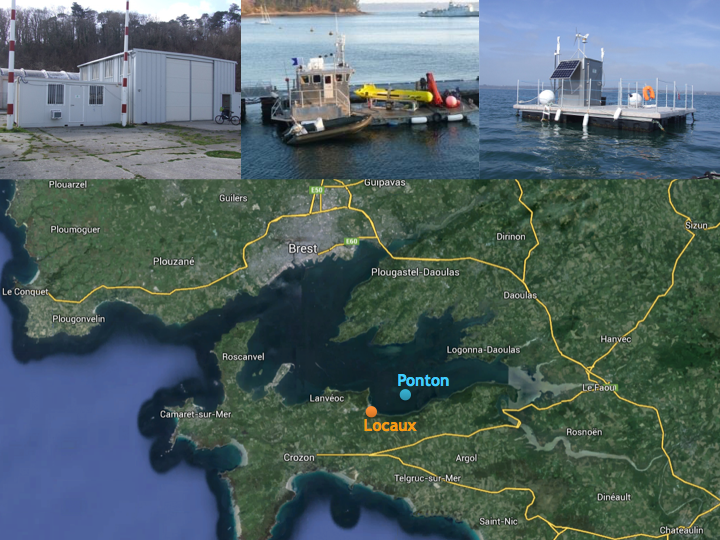

Docker in Real Life*
* from a student
Par Pierre Zemb / @PierreZ
+Me

Pierre Zemb
Etudiant ingénieur à l'ISEN Brest
- Ancien stagiaire/alternant Arkéa
- Futur stagiaire/alternant OVH
Le programme
- Ma découverte de Docker
- Mon utilisation personnel de Docker
- L'utilisation de Docker dans le cadre d'un projet scolaire
Slides dispo sur http://slides.pierrezemb.fr/
Tout a commencé ici !

Mon sentiment après

L'équipe Sysadmin

1ère réponse

Les conteneurs ne sont pas nouveaux !
- 2000: BSD Jails
- 2004: Solaris Zones
- 2008: LXC (Linux Containers)
- 20 mars 2013: Docker
Bare-metal, Docker Containers, and Virtualization: The Growing Choices for Cloud Applications
Qu'apporte Docker ?
- Simplicité d'utilisation
- Construction d'une image à partir d'un DockerFile
- Un registry pour ses images
- API REST
- ...
Retour à l'équipe Sysadmin
2ème réponse

DevOps: côté développeur
Le conteneur utilisé en développement aura le même comportement qu'en production !
DevOps: côté Ops
Accéléreration du déploiement des applications
La condition

Retour à l'équipe Sysadmin
3ème réponse

Les défauts de Docker: La sécurité
Beaucoup de travail a été fait, il en reste encore...
Il existe des failles au niveau:
- de Docker lui-même
- du noyau
Les défauts de Docker: le changement de cap
Au départ: Added 'Standard Container manifesto' to README
A l'arrivée: remove original shipping containers 'manifesto'
Projet à regarder de près: CoreOS+Rocket
Les défauts de Docker: son monolithisme
Un seul binaire client/serveur gère à lui tout seul:
- La construction des images
- La récupération des images
- La gestions des volumes
- La construction des sous-couches du FileSystem
- L'isolation des process
- La surcouche réseau (NAT, proxy réseau)
- ...
Les défauts de Docker: le réseau

Doc de Docker: Network Configuration
Résumé de la conversation
Avantages de Docker:
- Une approche plus souple
- Un moyen de communication entre Dev et Ops
- Modernisation des LXC
- Permet d'éviter des produits Windows
Résumé de la conversation
Quelques petits points noirs à savoir:
- Le binaire Docker
- Gestion du réseau
- Boot2docker
La conséquence

La conséquence
From DockerCon's Keynote
La conséquence
Docker sur Windows

Mon utilisation de Docker

Mon utilisation de Docker : serveur OVH
Un conteneur par application
- Nginx en frontal de mes conteneurs
- Un conteneur par application
- OpenVPN
- Shout (client IRC)
- Ghost
- Cadvisor
Mon utilisation de Docker: Raspberry Pi
Plateforme de test:
- Serveur Web
- Systèmes distribués en Go
- Hadoop
- OpenVPN
Mon utilisation de Docker: Quelle image choisir ?
Avantages:
- Un processus d'initialisation correct
- Problème avec APT résolu
- syslog-ng/log rotate
- Possibilité de SSH
Mon utilisation de Docker: Systemd en orchestrateur
vim /etc/systemd/dockerat.service
[Unit]
Description=%i service in a docker
After=docker.service
Requires=docker.service
[Service]
Restart=always
ExecStart=/usr/bin/docker start -a %i
ExecStop=/usr/bin/docker stop -t 2 %i
[Install]
WantedBy=local.target
systemctl enable docker@nom_de_mon_super_conteneur
Mon utilisation de Docker: la gestion des logs
docker run -v /var/log/nom_de_mon_super_conteneur:/var/log
Mon utilisation de Docker: un exemple
Mon utilisation de Docker: un exemple
Backend REST écrit en Go
- GET sur / renvoie le top 5 des scores
- POST sur / envoie un score
Mon utilisation de Docker: un exemple
FROM golang
MAINTAINER PierreZ
ADD . /go/src/github.com/pierrez/ElementZ-server
RUN go get github.com/martini-contrib/binding
RUN go get github.com/go-martini/martini
RUN go install github.com/github.com/pierrez/ElementZ-server
ENTRYPOINT /go/bin/ElementZ-server
EXPOSE 3000
Mon utilisation de Docker: un exemple
#!/bin/bash
set -e;
docker build -t elementz_image .;
docker run -d -p 3000:3000 --name elementz elementz_image;
Mon utilisation de Docker: un exemple
Résultat du GET sur /
Projet scolaire: SeaTestBase
SeaTestBase
Actuellement
Serveur OVH (SoYouStart) avec:
- Joomla
- Zabbix
- ERP
- Différents projets scolaires Web
(Très) prochainement
Serveur RunAbove
- Remplacement de Joomla par WordPress
- Remplacement de Zabbix par InfluxDB
- Migration de l'ERP
- Déplacement des sites statiques sur l'Object Storage de RunAbove
- Ajout d'ElasticSearch
La simplicité de Docker
Besoin d'une image pour InfluxDB ?
La simplicité de Docker
Besoin d'une image pour InfluxDB ?

La simplicité de Docker
Besoin d'une image pour InfluxDB ?
Merci de votre attention !
Avez-vous des questions ?
Slides dispo sur http://slides.pierrezemb.fr/